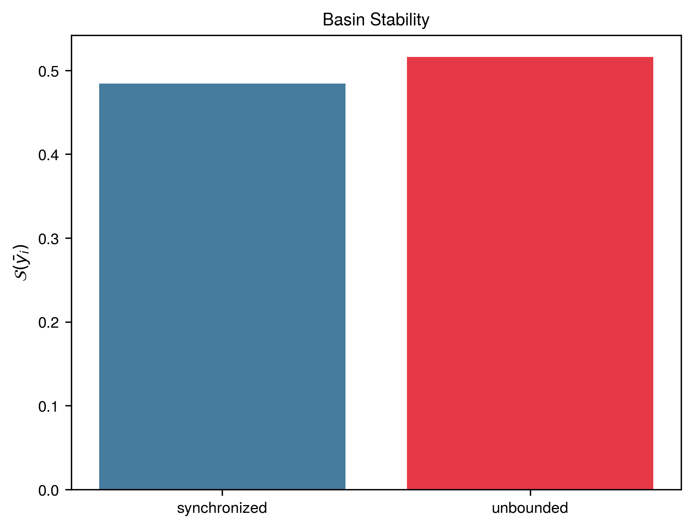
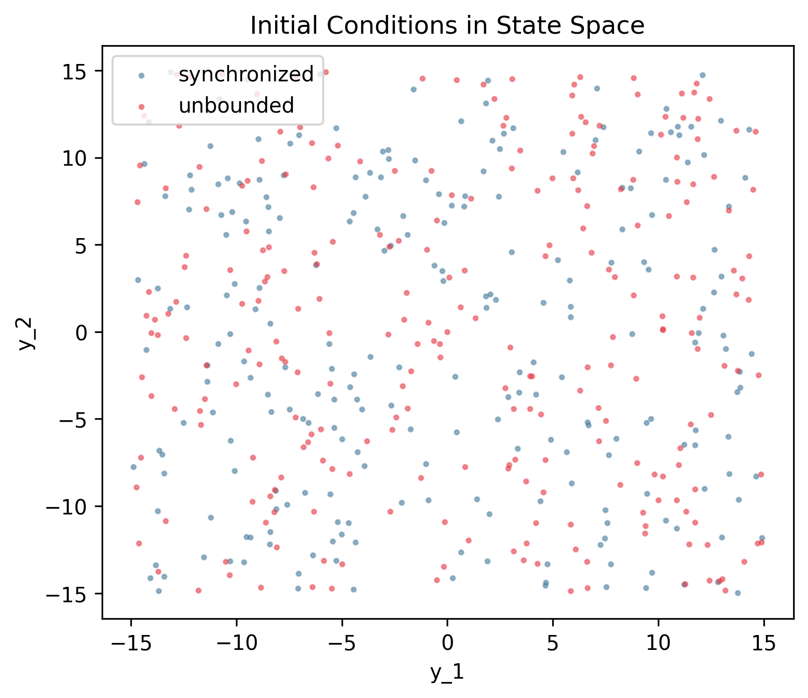
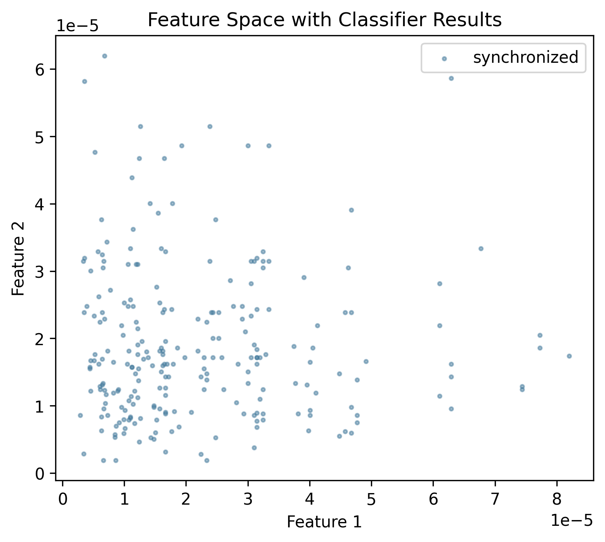
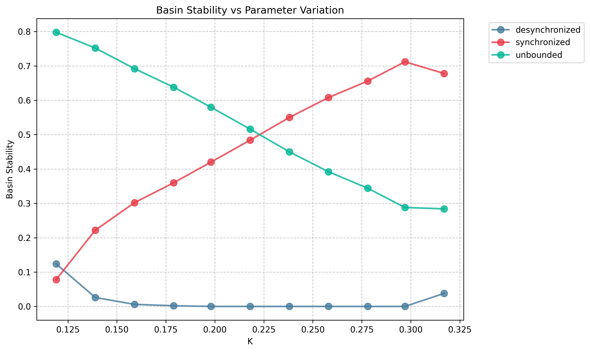

Rössler Network
System Description
Network of 100 coupled Rössler oscillators studying synchronization dynamics:
\[
\begin{aligned}
\dot{x}_i &= -y_i - z_i + K \sum_{j \in \mathcal{N}_i} (x_j - x_i) \\
\dot{y}_i &= x_i + ay_i \\
\dot{z}_i &= b + z_i(x_i - c)
\end{aligned}
\]
where \(i = 1, \ldots, 100\) and \(\mathcal{N}_i\) denotes the neighbors of node \(i\) in the network.
System Parameters
| Parameter | Symbol | Value |
|---|---|---|
| Rössler parameter | \(a\) | 0.2 |
| Rössler parameter | \(b\) | 0.2 |
| Rössler parameter | \(c\) | 7.0 |
| Coupling strength | \(K\) | 0.218 (baseline) |
| Network topology | — | Scale-free, 100 nodes |
Sampling
- Dimension: \(D = 300\) (3 states \(\times\) 100 nodes)
- Sample size: \(N = 500\)
- Distribution: \(\rho\) = Uniform
- Region of interest: \(\mathcal{Q}(x_i, y_i, z_i) : [-15, 15] \times [-15, 15] \times [-5, 35]\) per node
Solver
| Setting | Value |
|---|---|
| Method | Dopri5 (Diffrax) |
| Time span | \([0, 1000]\) |
| Steps | 1000 (\(f_s\) = 1 Hz) |
| Relative tolerance | 1e-03 |
| Absolute tolerance | 1e-06 |
| Event function | Divergence at \(\lvert y \rvert > 400\) |
Feature Extraction
Maximum pairwise deviation at final time step:
- States: all \(x_i, y_i, z_i\)
- Formula: \(\Delta_x = \max_i(x_i) - \min_i(x_i)\), similarly for \(y\), \(z\); plus \(\Delta_{\text{all}} = \max(\Delta_x, \Delta_y, \Delta_z)\)
- Transient cutoff: \(t^* = 950.0\)
Clustering
- Method: Threshold classifier (
SynchronizationClassifier) - Threshold: \(\epsilon = 1.5\)
- Rule: Synchronized if \(\Delta_{\text{all}} < \epsilon\), desynchronized otherwise
Attractors
The system exhibits three types of behavior:
- Synchronized: All oscillators converge to a common trajectory
- Desynchronized: Oscillators remain coupled but do not synchronize
- Unbounded: Some trajectories diverge to infinity (detected by event function)
Basin stability is computed for non-unbounded states (synchronized + desynchronized).
Reproduction Code
Setup
def setup_rossler_network_system() -> SetupProperties:
"""Setup the Rössler network system for basin stability estimation.
Uses coupling strength K=0.218 (expected S_B ≈ 0.496 from paper).
:return: Configuration dictionary for BasinStabilityEstimator.
"""
k = 0.218
n = 500
device = "cuda" if torch.cuda.is_available() else "cpu"
print(f"Setting up Rössler network system on device: {device}")
print(f" N = {N_NODES} nodes, k = {k}")
params: RosslerNetworkParams = {
"a": 0.2,
"b": 0.2,
"c": 7.0,
"K": k,
"edges_i": EDGES_I,
"edges_j": EDGES_J,
"N": N_NODES,
}
ode_system = RosslerNetworkJaxODE(params)
min_limits = (
[-15.0] * N_NODES # x_i in [-15, 15]
+ [-15.0] * N_NODES # y_i in [-15, 15]
+ [-5.0] * N_NODES # z_i in [-5, 35]
)
max_limits = (
[15.0] * N_NODES # x_i
+ [15.0] * N_NODES # y_i
+ [35.0] * N_NODES # z_i
)
sampler = UniformRandomSampler(
min_limits=min_limits,
max_limits=max_limits,
device=device,
)
solver = JaxSolver(
time_span=(0, 1000),
n_steps=1000,
device=device,
rtol=1e-3,
atol=1e-6,
use_cache=True,
event_fn=rossler_stop_event,
)
feature_extractor = SynchronizationFeatureExtractor(
n_nodes=N_NODES,
time_steady=950,
device=device,
)
sync_classifier = SynchronizationClassifier(
epsilon=1.5,
)
return {
"n": n,
"ode_system": ode_system,
"sampler": sampler,
"solver": solver,
"feature_extractor": feature_extractor,
"estimator": sync_classifier,
}
Single K Value
def main() -> BasinStabilityEstimator:
"""Run basin stability estimation for Rössler network.
Uses coupling strength K=0.218 (expected S_B ≈ 0.496 from paper).
:return: Basin stability estimator with results.
"""
props = setup_rossler_network_system()
bse = BasinStabilityEstimator(
n=props["n"],
ode_system=props["ode_system"],
sampler=props["sampler"],
solver=props.get("solver"),
feature_extractor=props.get("feature_extractor"),
predictor=props.get("estimator"),
template_integrator=props.get("template_integrator"),
save_to="results",
feature_selector=None,
detect_unbounded=False,
)
bse.estimate_bs()
return bse
K Parameter Sweep
def main() -> BasinStabilityStudy:
"""Run adaptive parameter study for Rössler network coupling strength.
Sweeps through K values from paper to analyze basin stability variation.
:return: Adaptive basin stability estimator with results.
"""
props = setup_rossler_network_system()
study_params = SweepStudyParams(
name='ode_system.params["K"]',
values=K_VALUES_FROM_PAPER.tolist(),
)
solver = props.get("solver")
feature_extractor = props.get("feature_extractor")
estimator = props.get("estimator")
template_integrator = props.get("template_integrator")
assert solver is not None
assert feature_extractor is not None
assert estimator is not None
bse = BasinStabilityStudy(
n=props["n"],
ode_system=props["ode_system"],
sampler=props["sampler"],
solver=solver,
feature_extractor=feature_extractor,
estimator=estimator,
study_params=study_params,
template_integrator=template_integrator,
save_to="results_k_study",
)
bse.estimate_as_bs()
return bse
Baseline Results (K=0.218)
Comparison with Paper Results
| Attractor | pyBasin BS ± SE | Paper BS ± SE | Difference | 95% CI | Status |
|---|---|---|---|---|---|
| synchronized | 0.4840 ± 0.0223 | 0.4960 ± 0.0224 | -0.0120 | ±0.0620 | ✓ |
| unbounded | 0.5160 ± 0.0223 | 0.5040 ± 0.0224 | +0.0120 | ±0.0620 | ✓ |
Visualizations
Basin Stability

State Space

Feature Space

K Parameter Sweep
Comparison with Paper Results
| Parameter | Attractor | pyBasin BS ± SE | Paper BS ± SE | Difference | 95% CI | Status |
|---|---|---|---|---|---|---|
| 0.119 | synchronized | 0.0780 ± 0.0120 | 0.2260 ± 0.0187 | -0.1480 | ±0.0435 | ✗ |
| unbounded | 0.7980 ± 0.0180 | 0.7740 ± 0.0187 | +0.0240 | ±0.0508 | ||
| 0.139 | synchronized | 0.2220 ± 0.0186 | 0.2740 ± 0.0199 | -0.0520 | ±0.0534 | ✓ |
| unbounded | 0.7520 ± 0.0193 | 0.7260 ± 0.0199 | +0.0260 | ±0.0544 | ||
| 0.159 | synchronized | 0.3020 ± 0.0205 | 0.3300 ± 0.0210 | -0.0280 | ±0.0576 | ✓ |
| unbounded | 0.6920 ± 0.0206 | 0.6700 ± 0.0210 | +0.0220 | ±0.0578 | ||
| 0.179 | synchronized | 0.3600 ± 0.0215 | 0.3460 ± 0.0213 | +0.0140 | ±0.0592 | ✓ |
| unbounded | 0.6380 ± 0.0215 | 0.6540 ± 0.0213 | -0.0160 | ±0.0593 | ||
| 0.198 | synchronized | 0.4200 ± 0.0221 | 0.4720 ± 0.0223 | -0.0520 | ±0.0615 | ✓ |
| unbounded | 0.5800 ± 0.0221 | 0.5280 ± 0.0223 | +0.0520 | ±0.0615 | ||
| 0.218 | synchronized | 0.4840 ± 0.0223 | 0.4960 ± 0.0224 | -0.0120 | ±0.0620 | ✓ |
| unbounded | 0.5160 ± 0.0223 | 0.5040 ± 0.0224 | +0.0120 | ±0.0620 | ||
| 0.238 | synchronized | 0.5500 ± 0.0222 | 0.5940 ± 0.0220 | -0.0440 | ±0.0613 | ✓ |
| unbounded | 0.4500 ± 0.0222 | 0.4060 ± 0.0220 | +0.0440 | ±0.0613 | ||
| 0.258 | synchronized | 0.6080 ± 0.0218 | 0.6280 ± 0.0216 | -0.0200 | ±0.0602 | ✓ |
| unbounded | 0.3920 ± 0.0218 | 0.3720 ± 0.0216 | +0.0200 | ±0.0602 | ||
| 0.278 | synchronized | 0.6560 ± 0.0212 | 0.6560 ± 0.0212 | +0.0000 | ±0.0589 | ✓ |
| unbounded | 0.3440 ± 0.0212 | 0.3440 ± 0.0212 | +0.0000 | ±0.0589 | ||
| 0.297 | synchronized | 0.7120 ± 0.0203 | 0.6940 ± 0.0206 | +0.0180 | ±0.0566 | ✓ |
| unbounded | 0.2880 ± 0.0203 | 0.3060 ± 0.0206 | -0.0180 | ±0.0566 | ||
| 0.317 | synchronized | 0.6780 ± 0.0209 | 0.6900 ± 0.0207 | -0.0120 | ±0.0576 | ✓ |
| unbounded | 0.2840 ± 0.0202 | 0.3100 ± 0.0207 | -0.0260 | ±0.0566 |
Visualizations
Basin Stability Variation

References
Menck, P. J., Heitzig, J., Marwan, N., & Kurths, J. (2013). How basin stability complements the linear-stability paradigm. Nature Physics, 9(2), 89-92.